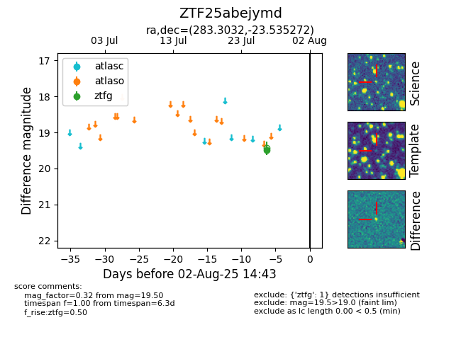

Target ZTF25abejymd at 2025-08-05 23:02, see:
FINK: fink-portal.org/ZTF25abejymd
Lasair: lasair-ztf.lsst.ac.uk/objects/ZTF25abejymd
ALeRCE: alerce.online/object/ZTF25abejymd
alt names
ZTF25abejymd (ztf,fink)
coordinates:
equatorial (ra, dec) = (283.3032,-23.53527)
galactic (l, b) = (11.9197,-10.85941)
photometry
last ztfg=19.50
1 ztfg detections
